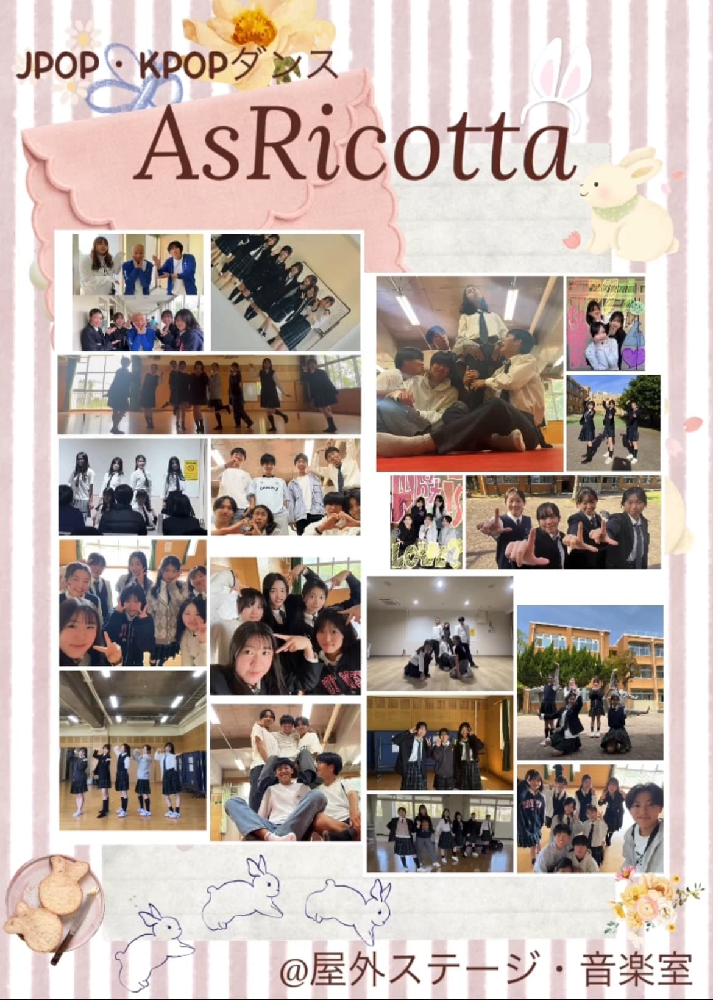
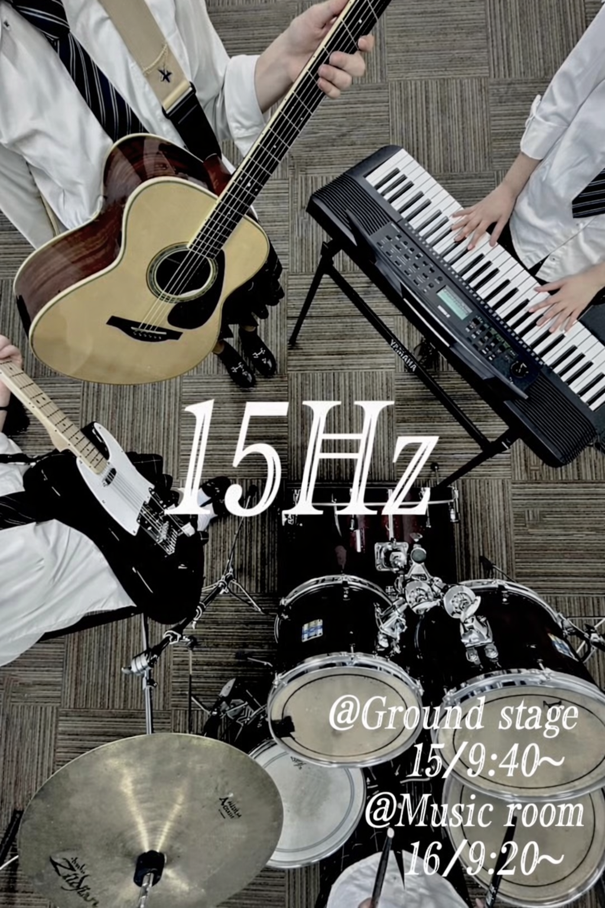
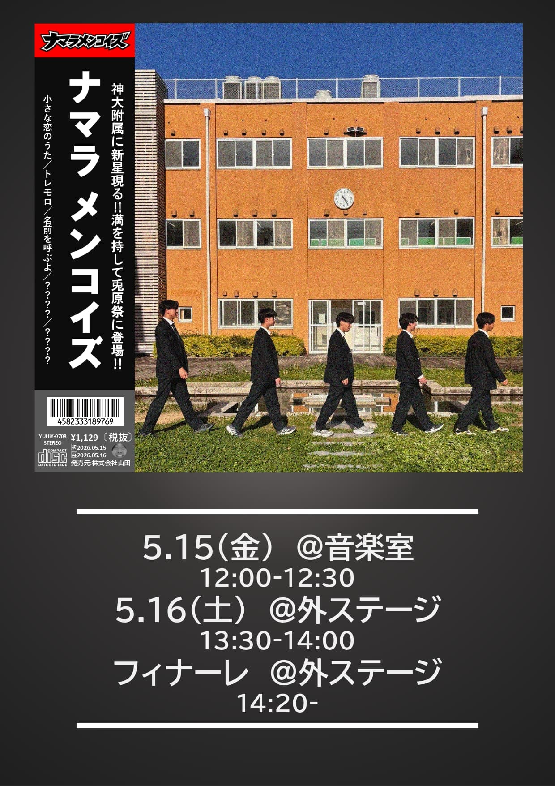
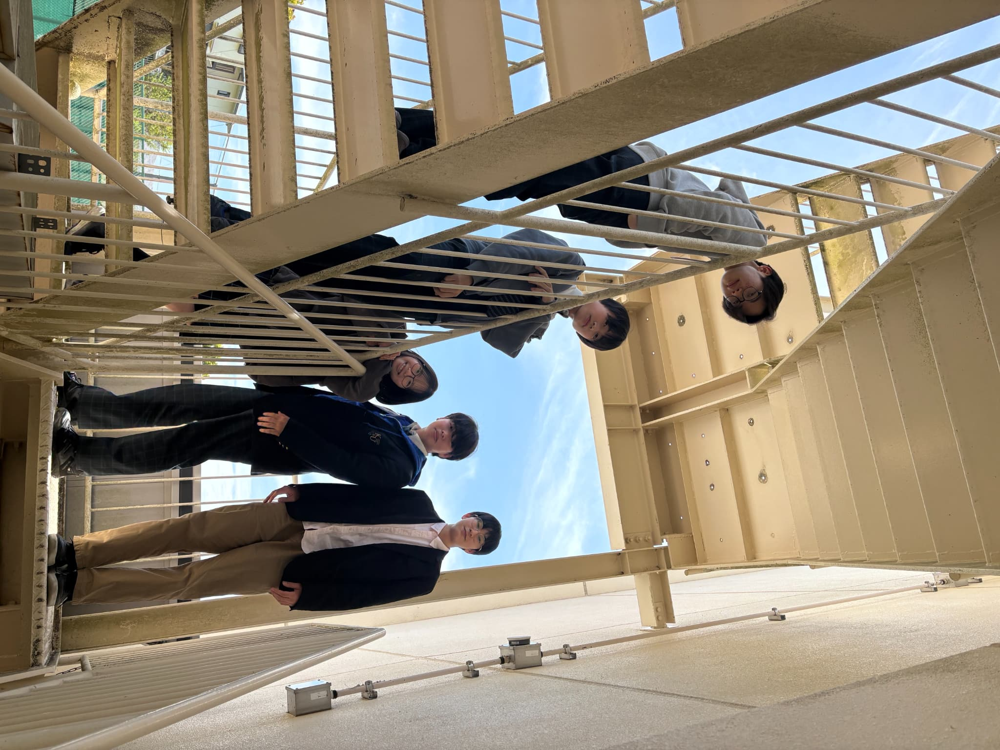
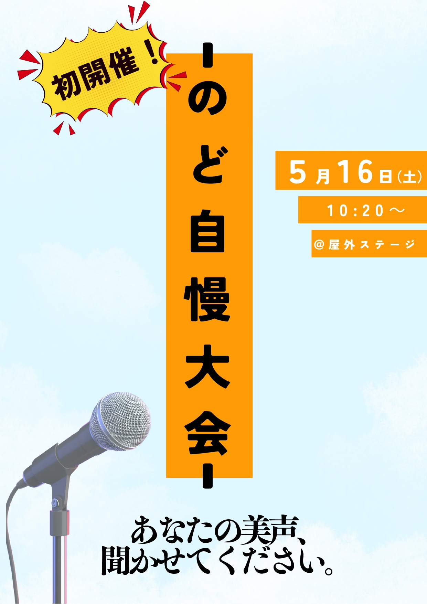
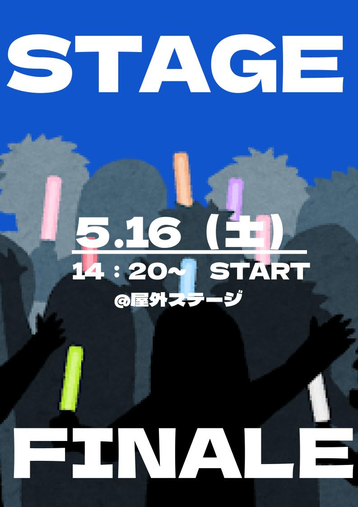
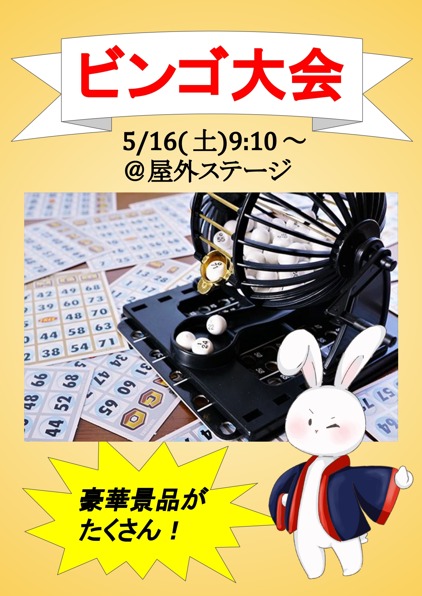
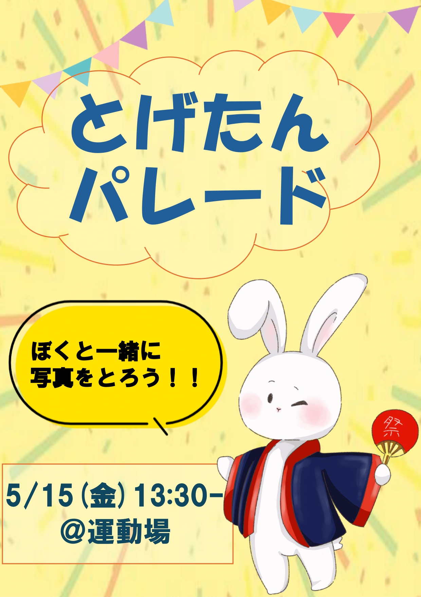

企画一覧
企画検索
運動場の企画一覧です。
-

- AsRicotta
- #KPOP #JPOP #ダンス #有志企画 #屋外ステージ
@屋外ステージ、音楽室
-

- 15㎐
- #15㎐ #有志企画 #バンド #屋外ステージ
@屋外ステージ、音楽室
-

- ナマラ・メンコイズ
- #ナマラ・メンコイズ #有志企画 #バンド #屋外ステージ
@屋外ステージ、音楽室
-

- Queen of YAMATAIKOKU
- #Queen of YAMATAIKOKU #有志企画 #バンド #屋外ステージ
@屋外ステージ、音楽室
-

- アライグマの友情
- #アライグマの友情 #有志企画 #バンド #屋外ステージ
@屋外ステージ
-

- PandA
- #PandA #有志企画 #バンド #屋外ステージ
@屋外ステージ、音楽室
-

- うに醤油
- #うに醤油 #有志企画 #漫才 #屋外ステージ
@屋外ステージ、音楽室
-

- のど自慢大会
- #のど自慢 #本部企画 #屋外ステージ
@屋外ステージ
-

- ステージフィナーレ
- #ステージフィナーレ #本部企画 #屋外ステージ
@屋外ステージ
-

- ビンゴ大会
- #ビンゴ #本部企画 #屋外ステージ
@屋外ステージ
-

- とげたんパレード
- #とげたん #本部企画 #屋外ステージ
@屋外ステージ